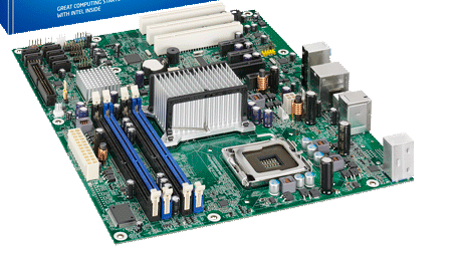
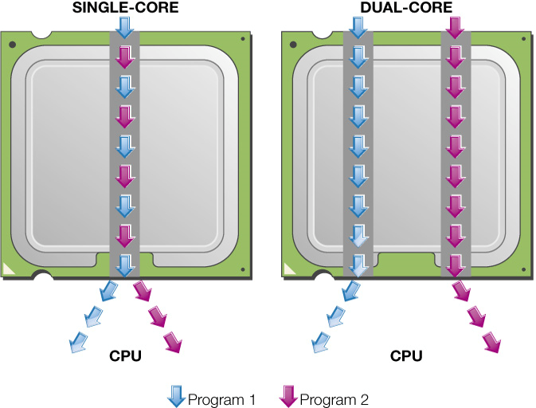

Computer Architecture
Motherboard And CPU
➠ Motherboard
☛ It holds and allows communication between many of the electronic components of a system, such as the central processing unit (CPU) and memory, and provides connectors for other peripherals.
☛ It is on the size of A4 paper, its color is green or gold. On which we can distinguish the following components:
↳ RAM.
↳ Expansion Slots.
↳ Expansion Cards.
↳ Processor, on which a fan or a heat sink is mounted.
↳ Battery.
↳ Power supply to convert the 200 volt AC to 3.3 volt DC.
↳ Clock, which generates series of pulses per second.
↳ Chip Sets.
↳ ROM.
↳ Connectors
➠ Central Processing Unit
☛ CPU or processor.
☛ “Brains” of the computer.
☛ Controls all functions of the computer components.
☛ Processes all commands and instructions.
☛ Billions of tasks per second.
☛ CPU Performance Measures.
↳ Processor speed measured in hertz (Hz).
➠ Megahertz (MHz) or gigahertz (GHz).
↳ Number of cores.
➠ Single.
➠ Dual.
➠ Quad.
➠ Ten.
